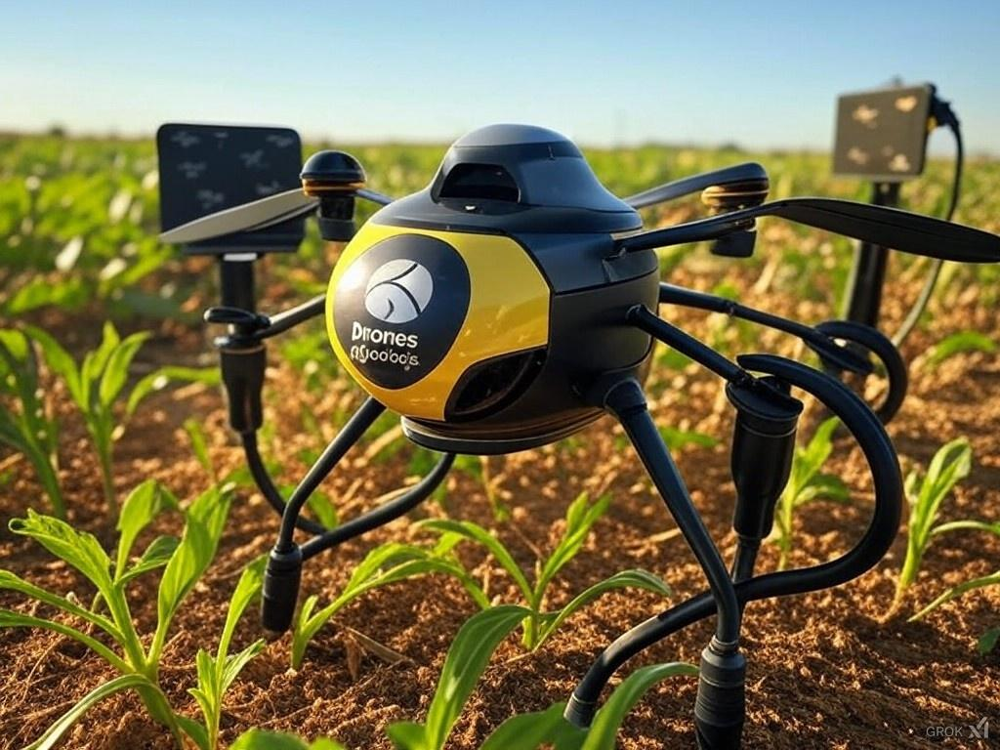
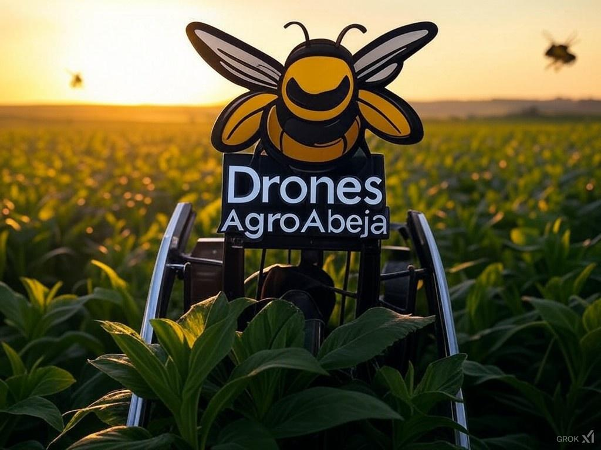

Sobre Nosotros
AgroAbeja es una startup innovadora dedicada al desarrollo de drones avanzados para la protección agrícola contra plagas invasoras. Nuestro objetivo es ofrecer soluciones sostenibles y eficientes que reduzcan la dependencia de pesticidas y mejoren la productividad en los cultivos. Con sede en Madrid, nuestros drones están diseñados para monitorear y actuar contra plagas de manera autónoma, utilizando tecnologías avanzadas como inteligencia artificial y ondas sonoras específicas para repeler insectos sin dañar los cultivos.
Productos y Servicios
Productos
 Ofrecemos una innovadora gama de productos diseñados para transformar la agricultura moderna. Nuestros drones, cargadores y equipos están desarrollados con tecnología avanzada para ayudar a los agricultores a gestionar sus cultivos de manera más eficiente y sostenible. Cada producto está diseñado para satisfacer las necesidades específicas del sector agrícola, asegurando calidad, durabilidad y un impacto positivo en el medio ambiente.
Servicios
 Nuestros servicios en AgroAbeja están orientados a proporcionar un soporte integral a los agricultores. Desde suscripciones de mantenimiento y alquiler de drones hasta instalación y capacitación, nos aseguramos de que nuestros clientes cuenten con las herramientas y el conocimiento necesarios para maximizar el rendimiento de sus cultivos. Nuestro compromiso es acompañar a los agricultores en cada paso de su camino hacia una agricultura más eficiente y sostenible.
Historia
AgroAbeja fue fundada por un equipo de profesionales apasionados por la tecnología y la agricultura sostenible. Erjie Xia, Sebastián Cedano y Ana Chun Gómez unieron sus fuerzas para crear una empresa que busca revolucionar la forma en que se gestionan los cultivos. Nuestros drones, diseñados en forma de abeja, representan nuestra conexión con la naturaleza y nuestro compromiso con la innovación y la sostenibilidad en el sector agrícola.